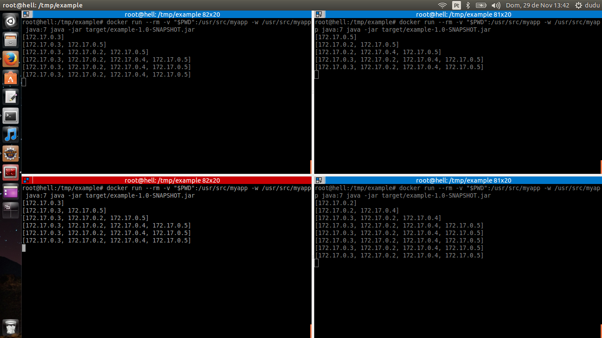
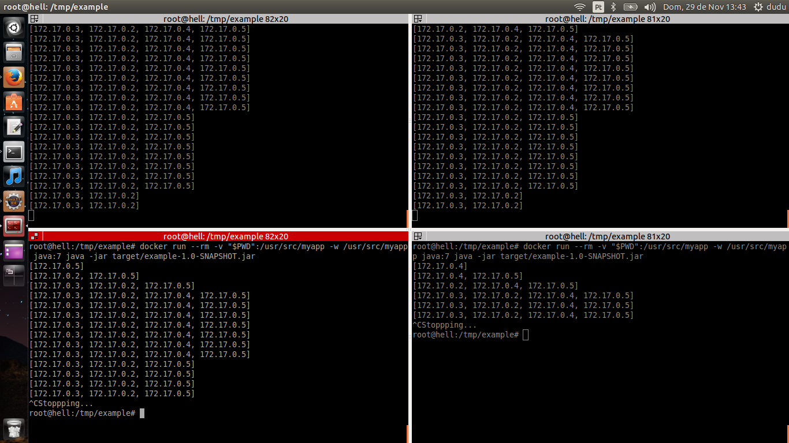

Multicast (one-to-many or many-to-many distribution) is group communication where information is addressed to a group of destination computers simultaneously (Wikipedia).
UDP is the most common protocol used to broadcast/multicast messages. It’s important to say that it is a best effort protocol with no delivery guarantees, order or duplicate protection, so you need to design your application aware of it.
Reliable musticast can be implemented on top of the UDP protocol by some middleware applications.
There are several types of applications that can be designed to take advantage of this protocol:
In this tutorial I’ll show you how to implement a basic version of the first one with Java SE 7.
Based on the references I implemented two threads: the Sender and the Receiver.
The SenderThread class sends the String “hi” every 5 seconds in a DatagramPacket addressed to 225.4.5.6:5000 (randomly choosed based on this) through the MulticastSocket.
package com.github.ecolabardini.example;
import java.io.IOException;
import java.net.DatagramPacket;
import java.net.InetAddress;
import java.net.MulticastSocket;
public class SenderThread extends Thread {
@Override
public void run() {
while (!isInterrupted())
send("hi");
}
private void send(String message) {
try {
MulticastSocket socket = new MulticastSocket();
socket.setTimeToLive(1);
byte[] buf = message.getBytes();
DatagramPacket pack =
new DatagramPacket(buf, buf.length,
InetAddress.getByName(Config.group), Config.port);
socket.send(pack);
socket.close();
sleep(5000);
} catch (IOException e) {
e.printStackTrace();
} catch (InterruptedException e) {
// we don't care about sleep() being interrupted
}
}
}
The ReceiverThread class is always listening for packages on the same multicast address. If the package contains the bytes corresponding to "hi", then the sender IP address is added to a Map (key=IP address, value=current time in miliseconds).
As packages are received, the ReceiverThread prints the list of available hosts. The getAvailableHosts method calculates for each host if the last "hi" message is older than 10 seconds, if it is then the host is removed from the Map (i.e. the host is no longer available - a network outage, a shutdown or a crash happened, for instance).
package com.github.ecolabardini.example;
import java.io.IOException;
import java.net.DatagramPacket;
import java.net.InetAddress;
import java.net.MulticastSocket;
import java.util.ArrayList;
import java.util.HashMap;
import java.util.List;
import java.util.Map;
import java.util.Map.Entry;
import java.util.Set;
public class ReceiverThread extends Thread {
private Map<String, Long> hosts = new HashMap<String, Long>();
@Override
public void run() {
try {
MulticastSocket socket = new MulticastSocket(Config.port);
socket.joinGroup(InetAddress.getByName(Config.group));
while (!isInterrupted()) {
byte buf[] = new byte[1024];
DatagramPacket pack = new DatagramPacket(buf, buf.length);
socket.receive(pack);
String message =
new String(pack.getData(), 0, pack.getLength());
if (message.equals("hi")) {
hosts.put(
pack.getAddress().getHostAddress(),
System.currentTimeMillis()
);
}
System.out.println(getAvailableHosts());
}
socket.leaveGroup(InetAddress.getByName(Config.group));
socket.close();
} catch (IOException e) {
e.printStackTrace();
}
}
private Set<String> getAvailableHosts() {
List<String> hostsToRemove = new ArrayList<String>();
for (Entry<String, Long> entry : hosts.entrySet()) {
long entryAge = System.currentTimeMillis() - entry.getValue();
if (entryAge > 10000) {
hostsToRemove.add(entry.getKey());
}
}
for (String host : hostsToRemove) hosts.remove(host);
return hosts.keySet();
}
}
You can run the example following the steps bellow (you’ll need Docker 1.9.1 and Maven 3.3.3):
# Download the source code and unzip
wget https://s3-us-west-2.amazonaws.com/ecolabardini/playing-with-multicast.zip
unzip playing-with-multicast.zip
# Compile
cd example
mvn clean install
# Run the docker container with java 7 pre-installed
# (you should run more than once to see the list of
# available hosts increasing)
sudo -s
docker run --rm -v "$PWD":/usr/src/myapp -w /usr/src/myapp java:7 java -jar target/example-1.0.jar
Print-screens of my execution (4 docker containers):

